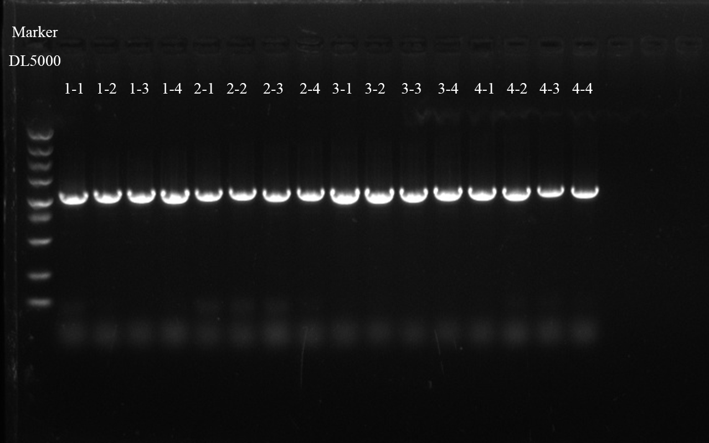
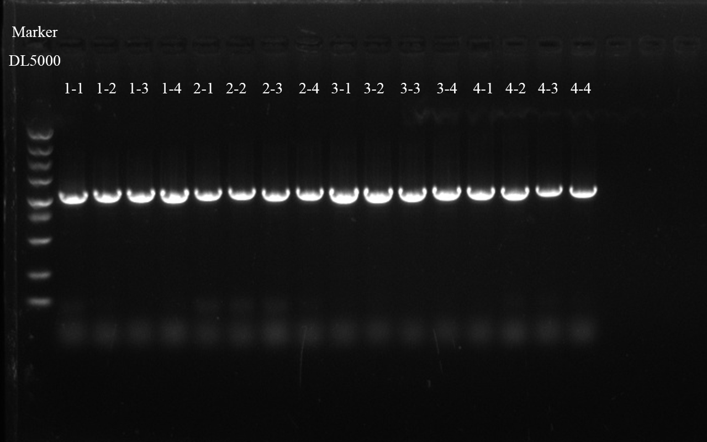
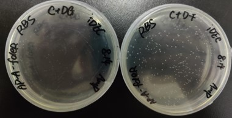
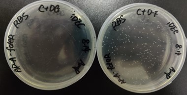

Day1


2023/8/15
Member: Z.M.L
Experiment:
1.Colony PCR to verfied if the selected colonies containing the recombinant plasimd of AP-A-fdeR-RBS
2.Plasmid Extration for SplitC and sequence.
3.Culture starin containing the plasmid of SplitD for two test tubes and Plasmid Extraction of the plasmid of SplitD
4.Golden Gate Assembly of the plasmid of SplitD, SpliC and AP-P-T7RNAP.
5.Incubate S2208 starin in 5 mL 2×YT liquid medium containing Amp.
6.Preparation of 4 mL of Ampicillin at a concentration of 50mg/ mL.
Result:
2.Concentation:
SplitD-1:70.9 ng/μL, 1.74, 1.10
SplitD-2:40 ng/μL.45, 1.81, 1.43
3.Concentration:
SpliC:853.15 ng/μL, 1.97, 2.47
Member: Y.Y.X
Experiment:
Consult literature to look for suitable background.
Member: L.Y
Experiment:
Colony PCR to verfied if the selected colonies containing the recombinant plasimd of pQE and FdeR recombinant plasmid
Result:
(1)Failed
Day3

2023/8/17
Member: H.T.Q
Experiment:
1. error-prone PCR to obtain mutant fragments (25 round)
repeat the experient last day
2. Pre-experiment for liquiritigenin ( positive clone-2/14)
(1) Dilute the bacteria 100-fold with LB*100mL medium, add 100μL antibiotics (Kan) (1:1000)
(2) Culture to 0D600 to reach 0.6 (about 2 hours)
(3) Add liquiritigenin according to the concentration gradient of 0mM, 0.05 mM, 0.1 mM, 0.15 mM, 0.2 mM, 0.3 mM, 0.4 mM, 0.5 mM (There are 8 groups in total, plus PBS group)
(4) Induction culture at 37 °C for 12 h...(to be continue...)
3. Preservation of some strains using a 50% glycerol solution at -80℃
Including: positive clone- 2*4, positive clone- 14*6, NG-RS in PUC57
4. culture 2023quanhecheng gene in PUC57strain
Resistance: Amp (bla gene)
Member: Y.Y.X
Experiment:
1.Plasmid extraction to obtain the second and the fourteenth fdeR-pQE-P22 recombinant plasmids.
2.PCR to obtain split C and split D from the second and the fourteenth fdeR-pQE-P22 recombinant plasmids to change their RBS of eGFP.
3.Fastpure Gel DNA extraction to obtain split C and split D from the second and the fourteenth fdeR-pQE-P22 recombinant plasmids
Result:
1.DNA concentration: the second
fdeR-pQE-P22 recombinant plasmid-244.89 ng/μL; the fourteenth fdeR-pQE-P22 recombinant plasmid-299.61 ng/μL.
Member: Z.M.L
Experiment:
1.PCR to verify the T7RNAP in the plasmid of pBRT137-SP-T7RNAP.
2.PCR to obtain fragment pQE-fdeR-SplitC and pQE-fdeR-SplitD.
3.Gel DNA Extraction for pQE-fdeR-SplitC and pQE-fdeR-SplitD.
4.Culture pBT137-SplitC starin
5.Culture strains containing the plasimd of pQE-fdeR-2 and divide them into 8 groups, respectly.Each group was added different concentration of Liquiritigenin (0, 0.05, 0.10, 0.15, 0.20, 0.30, 0.40, 0.50mM) and cultured for 12 h.
6.Autoclave sterilization of 1.5 mL, 2 mL, 15 mL, 50 mL centrifuge tubes, 50% glycerol, 10μL, 200μL, 1000μL pipette tips, LB liquid medium sterilization
7.Obtain pBT137-SP-T7RNAP phage
Result:
1.There is no band of the fragment T7RNAP.
2.The band length of pQE-fdeR-SplitD-2D and pQE-fdeR-SplitD-14D were right, but the length of pQE-fdeR-SplitC-2C and pQE-fdeR-SplitC-14C were less than 2400bp
3.Concentration:
pQE-fdeR-SplitD-14D: 46.37 ng/μL, 1.96, 1.91
pQE-fdeR-SplitD-2D: 27.25 ng/μL, 1.96, 1.17
pQE-fdeR-SplitC-14C: 95.15 ng/μL, 2.02, 2.30
pQE-fdeR-SplitC-2C: 105.22 ng/μL, 1.87, 1.69
Member: L.Y
Experiment:
(1)Fastpure Gel DNA extraction Of AP-T7-A-P22-FdeR Fragment and GFP-positive Fragment
(2)Through ClonExpress technology, construct recombinant plasmids by ClonExpress technolog using FdeR gene and AP-t7-A vector 37 ℃ 30min
(3)Transformate the recombinantal plasmids of AP-T7-A-FdeR and AP-T7-A-GFP into DH5α competent cell
 


Day6

2023/8/20
Member: H.T.Q
Experiment:
1. Fastpure Gel DNA extraction
Marker: DL 5000, 120V, 25min
ep 4-2: sent for sequencing
2. Clonexpress
(1) Vector: pQE-Vec-3: 132.3 ng/μL (It needs to be diluted 10 times)
(2) Insert fragment:
① ep1-pQE: 11.15ng/μL
② ep-pQE fragment-2: 15.47ng/μL
③ ep 5-2:19.51 ng/μL
④ ep-6: 10.36 ng/μL
3. Transform the ep-plasmids into DH5α competent cell
Resistance: KanR
heat shock for 60s
Member: Z.M.L
Experiment:
1.Design a pair of primers to homologously recombine the Mid2, High2 and AP-P-T7RNAP.
Member: L.Y
Experiment:
Get the sequence results
Result:
There are so many unexcepted mutantations on the fdeR gene sequence.
 

Day2

2023/8/16
Member: H.T.Q
Experiment:
1. error-prone PCR to obtain mutant fragments (25 round)
(1) pQE-fdeR (985bp)
① primers: ep-fragment-F
PCR-fragemnt-R-ep2-0814
② Tm: 57℃
(2) AP-A-fdeR (981bp)
① primers: APA-epPCR-fragment-F-0812
PCR-fragment-R-ep2-0814
②Tm: 58℃
2. PCR for examination
Member: L.Y
Experiment:
send pQE-P22-FdeR plasmid to sequence again
Result:
We got the sequence results of FdeR-APA plasmid
The target fragment had no recombination
Member: Z.M.L
Experiment:
1.PCR to obtain fragment pQE-fdeR-SplitC and pQE-fdeR-SplitD.
2.Gel DNA Extraction for pQE-fdeR-SplitC.
3.Preparation of 4 mL of Streptomycin Sulfate at a concentration of 50mg/ mL.
4.Transformate the pBT137-SP-T7RNAP into S2208 competentnt cell.
5.Dilute a saturated culture of S2208 cells in 2× YT liquid media and grow to an OD600 of 0.6–0.9
Result:
1.There is no band of the fragment pQE-fdeR-SplitD
2.Concentation:
pQE-fdeR-SplitC-C1: 126.89 ng/μL, 2.02, 0.44
pQE-fdeR-SplitC-C2: 121.75 ng/μL, 1.98, 2.08
Day4

2023/8/18
Member: H.T.Q
Experiment:
Pre-experiment for liquiritigenin ( positive clone-2/14)
(1) 600μL bacterial solution was centrifuged at 5000 rpm for 3 min after the induction culture completed, and then discard the supernatant. 600 μL cold PBS buffer was pipetted and resuspended for 2 times, and 200μL was taken into a 96-well fluorescent plate.
(2) Samples were taken from the and fluorescence detected with a microplate reader (Ex=476nm/ Ex=514nm and Ex=486nm/ Ex=528nm and Ex=478nm/ Ex=516nm)
(3) Induction culture at 37 °C for 12 h...(to be continue...)
Member: Z.M.L
Experiment:
1.Construct recombinant plasmids by ClonExpress technolog using pQE-fdeR-SplitC gene and pQE-fdeR-SplitD vector.
2.Preservation of strains containing the plasmid of pBT137-SplitC using a 50% glycerol solution at -80℃
3.Plasmid extraction for the plasmid of pBT137-SplitC.
4.Transform the plasmid of pQE-fdeR-RBS into DH5α
6.Golden Gate assembly of the plasmid of pBT137-SP-T7RNAP.
7.Autoclave sterilization of 1.5 mL, 2 mL centrifuge tubes, 50% glycerol, 200μL pipette tips, LB liquid medium sterilization
Result:
3.Concentration:
P-SplitC-1: 141.36 ng/μL, 1.93, 2.18
P-SplitC-2: 195.75 ng/μL, 1.93, 2.22
P-SplitC-3: 123.64 ng/μL, 1.74, 0.99
P-SplitC-4: 203.36 ng/μL, 1.95, 2.24
P-SplitC-5: 348.46 ng/μL, 1.89, 1.70
Member: Y.Y.X
Experiment:
Construct recombinant plasmids by
ClonExpress technology using split C and split D.
Day5

2023/8/19
Member: H.T.Q
Experiment:
1. Plasmid extraction for 2023quanhecheng gene
Resistance: Amp (bla gene)
2. Preservation of 2023quanhecheng gene in PUC57 strains using a 50% glycerol solution at -80℃
2023quanhecheng gene in PUC57 * 4
Resistance: Amp (bla gene)
3. error-prone PCR to obtain mutant fragments (25 round) and sequencing
Template: pQE-P22
Gradient of enhancer: 4μ, 5μ, 6μ
Tm: 57℃, Extension 2min (Extended time)
4. Pre-experiment for liquiritigenin ( positive clone-2/14) (After 24h)
(1) 600μL bacterial solution was centrifuged at 5000 rpm for 3 min after the induction culture completed, and then discard the supernatant. 600 μL cold PBS buffer was pipetted and resuspended for 2 times, and 200μL was taken into a 96-well fluorescent plate.
(2) Samples were taken from the and fluorescence detected with a microplate reader (Ex=476nm/ Ex=514nm and Ex=486nm/ Ex=528nm and Ex=478nm/ Ex=516nm)
5. PCR to obtain vector used for error-prone experiment
(1) Template: pQE-vector (5032bp)
(2) primers: APA-ep-vector-F2
pQE-epvector(final)-R-0814
(3) Tm: 57℃, extension 200s (3min20s)
Member: Z.M.L
Experiment:
1.Colony PCR to verfied if the selected colonies containing the recombinant plasimd of pQE-fdeR-RBS
2.Transform the plasmid of pBT137-SP-T7RNAP into S2208 competentnt cell.
Member: L.Y
Experiment:
(1)Pick single colonies from the FdeR-1,FdeR-2,FdeR-3;
(2)Colony PCR to verfied if the selected colonies containing the recombinant plasimd of AP-T7-A-FdeR
(3)Send AP-T7-A vector and fragment of FdeR /GFP to sequence and wait for the results
Day7

2023/8/21
Member: H.T.Q
Experiment:
1. Colony PCR to verfied if the selected colonies containing the recombinant plasimd of ep-pQE recombinant plasmids
(1) Template:
① ep-pQE-1 *4
② ep-pQE-2 *4
③ ep 5-2 *4
④ ep 6 *4
(2) Tm 56℃, extension 18s
(3) Primers: P22-R/F
2. Select the positive clone to culture
ep-pQE-1: 1 & 3
ep-pQE-2: 1 & 3
ep5-2: 1 & 2
ep6: 1 & 2
Member: Z.M.L
Experiment:
1.Palsmid Extraciton for pQE-fdeR-RBS and sequence
2.PCR to obtain the Mid2 and High2 with random sequence at the both side.
3.PCR to verify if the strain containing the plasmid of pBT137-SplitC